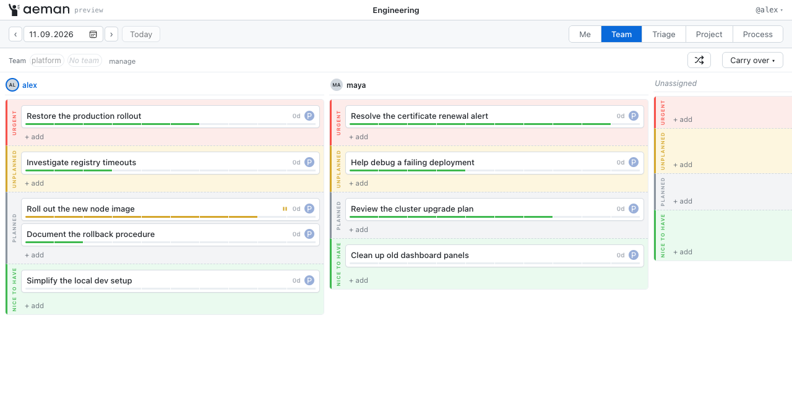
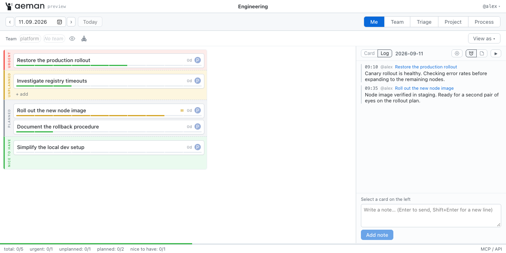

Short-term planning for engineering teams
Focus on today.
Keep engineers focused, run daily sprints,
and make unplanned work visible.
One day. Two perspectives.
The actual AEMAN interface · sample data
{kind=link}

{kind=link}
Scroll the preview sideways, or open the full-size image.
- UrgentResolve before the day ends
- UnplannedWork that arrived today
- PlannedRegular, planned work
- Nice to haveWhen every other zone is clear
Me
Your day.
Across your teams.
See each team’s current sprint together. Update readiness, capture notes, and keep your attention on the work in front of you.
Team
Everyone’s day.
On one screen.
People are columns; priorities are rows. Filter by team and carry unfinished work into a new sprint when the team is ready.
A three-month backlog doesn’t need
your attention all day.
The useful question is simpler: what am I doing today?
Focus
Only the work that matters now.
Visibility
Unplanned work no longer disappears.
Sync
A lead can understand the team’s state at a glance.
How it works
Today stays clear.
The weeks ahead stay visible.
Me + Team
Work in daily sprints. Start the next sprint with Carry over, keeping the history of unfinished work.
Triage
Place accepted work in a week. Future work stays off day boards until its week begins. Missed work remains visible as debt.
Project + Process
Organize project work into epic columns. Define recurring tasks and follow their iterations over time.
Git is the source of truth
Your board is
a repository.
Small YAML and Markdown files. No database of its own. Each write request becomes a commit; the activity feed is Git history.
A board can span multiple repositories. People see the repositories they can read, and need write access to change them.
GitHub GitLab Local Git
Read the storage designboard.yaml
teams/
<id>.yaml
projects/
<id>/project.yaml
processes/
<id>/process.yaml
cards/
<a>/<b>/<id>.mdYAML front matter, descriptions, and notes.
Unknown keys survive edits.
WebSocket watch
Live by design.
Changes from teammates or AI agents appear on open boards without a manual refresh. REST and MCP writes use the same board service.
LISTWATCHView-scoped updates
REST + MCP
Built for humans.
Ready for agents.
Use the UI, the JSON API, or an MCP client. The same board rules apply, and every change is recorded in Git.
/api/v1aeman mcp
Architecture
One binary. One board service.
An embedded React UI, REST, and MCP over a shared cache and shallow Git clones.
REST · WebSocket /api/v1MCP · stdio / HTTPIn self-hosted mode, the forge provides identity and repository permissions. The board data stays in Git.
Quick start
Build it.
Point it at your repository.
From a checkout of AEMAN, with Go 1.27.1+ and Node.js 20+ installed.
Replace the example URL with an empty repository you can push to. Authenticate with aeman login or your forge CLI before initializing it.
make build
./aeman init --repo https://github.com/acme/aeman-db.git
./aeman serve --repo aeman-db=https://github.com/acme/aeman-db.gitCommands from the project README.
Apache License 2.0